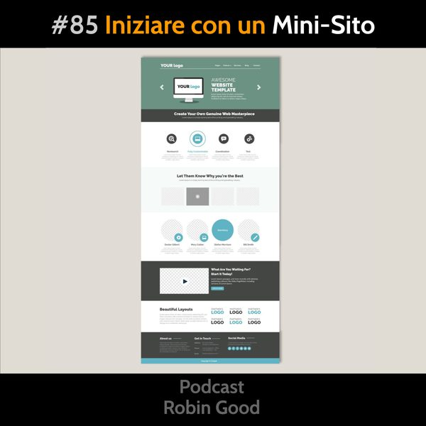

Iniziare con un Mini-Sito di Una Pagina

Finito il Project Brief val la pena mettere un primo piede nell’acqua prima di tuffarsi completamente nel pubblicare il proprio sito online.
Il Problema
Per costruire una presenza online basata su un sito web, ci vogliono dei mesi. Ma questo non vuol dire che è necessario attendere dei mesi per cominciare ad essere visibili, e ad avere una presenza base online.
Inoltre durante tutto il tempo che è necessario per creare contenuti e risorse che dovranno popolare il nostro sito, dove rimandiamo chi incontriamo e ci chiede di saperne di più, o chi ha già sentito parlare di noi e cerca attraverso Google la possibilità di poter leggere un profilo completo e approfondito su di noi?
Soluzione
La strada più semplice in assoluto in questa situazione è quella di aprire un profilo su LinkedIN e di compilarla con estrema cura e dovizia di dettagli. Il costo è zero e l’unica cosa che serve è la tua dedizione e cura.
Già nel profilo LinkedIN puoi mettere a buon uso il lavoro fatto nell’individuare e definire Chi Sei, Cosa Fai, e la tua USP. E’ inoltre utile dettagliare a fondo e con dovizia di particolari le tue esperienze professionali e quelle di studio, sia accademiche che non.
A complementare ed arricchire questo investimento iniziale in personal branding, suggerisco di prendere in seria considerazione la possibilità di creare un mini-sito di una pagina, dove presentare ancor più in dettaglio e profondità il tuo profilo professionale. Il vantaggio principale è quello di mostrare un profilo professionale per la tua attività su un dominio personale che attesta, più di una pagina LinkedIN, la tua serietà, determinazione e professionalità nel settore dove hai scelto di muoverti.
Per creare un mini-sito di una pagina oggi ci sono tutta una serie di tool davvero fantastici, che possono essere utilizzati anche da persone non tecniche e che consentono, avendo fatto a monte un buon lavoro di analisi e pianificazione di poter creare un mini-sito dall’aspetto professionale in pochissimo tempo.
Mi riferisco in particolare a tool come:
• Weblium.com
• Tilda.cc
• Landen.co
che offrono la possibilità di realizzare mini-siti di una pagina semplici ma efficaci come questi:
🔹MicheleBarzaghi.it
🔹AntonellaRussoTraining.it
🔹Sinastriadicoppia.it
🔹PamelaMazzanti.it
I costi di queste piattaforme / servizi, sono irrisori (apx $10-20/mese) e puoi provare e collaudarli praticamente senza dover pagare nulla.
La caratteristica principale di questi servizi è l'opportunità che offrono di creare siti web che hanno un look professionale anche senza avere competenze di grafica e design. La strategia adottata da questi servizi è infatti quella di integrare nel servizio template e blocchi pre-definiti per i contenuti da inserire già progettati da designer e grafici esperti. In questa maniera il design è già integrato nella piattaforma di pubblicazione e ciò che l'autore deve decidere è solo la struttura e ordine delle sezioni e la stesura dei contenuti che le popoleranno.
Inoltre queste piattaforme di pubblicazione hanno il grande vantaggio di essere estremamente semplici da usare e di consentire quindi a chi come te vuole usarle per pubblicare il proprio sito, di poter poi aggiornare e modificare i contenuti del sito direttamente, in maniera facile e intuitiva senza dover ricorrere ad un webmaster o ad un tecnico.
Questo fa tutta la differenza per un imprenditore o una piccola azienda nello snellire e semplificare la gestione e la comunicazione attraverso il proprio sito web.
Suggerimenti e consigli per far bene
• Non iniziare fino a che non hai tutti i contenuti pronti (incluse le immagini)
• Fai una bozza di ciò che vuoi realizzare su carta o al computer decidendo l’ordine delle cose che appariranno
• Usa una struttura del tipo:
CTA - cosa offri / che problema risolvi
Cosa offri
Dettaglio
Chi sei
Tue esperienze e credenziali
Testimonianze
Contatti
• Non ti perdere nel design e nella scelta dei colori
Fai inizialmente le cose in maniera minimalista e solo alla fine valuta se e dove aggiungere degli elementi di colore oltre le immagini
• Non centrare testi che sono più lunghi di due righe
• Se ti fai aiutare da un graphic designer o da una persona esperta in comunicazione visiva, ancora meglio. Poi puoi comunque avere il vantaggio di poter modificare e cambiare le cose quando vorrai senza dover passare per un tecnico.
-------------
Info Utili
• Ascolta e condividi questo podcast:
https://gopod.me/RobinGood
• Dammi feedback:
critiche, commenti, suggerimenti, idee e domande unendoti al gruppo Telegram @RobinGoodPodcastFeedback.
• Diventa sostenitore:
esprimi la tua soddisfazione e incoraggiamento diventando anche tu un sostenitore attivo di questo podcast qui: www.patreon.com/Robin_Good
• Rimani aggiornato:
https://facebook.com/RobinGoodItalia/
• Segui le mie scoperte e dove sarò:
http://robingood.it/toptools-newsletter
Per qualsiasi richiesta scrivi a:
Ludovica.Scarfiotti@robingood.it
Musica: "Daydream" by Ely Way - disponibile su Bandcamp: https://chillhop.bandcamp.com/track/daydream